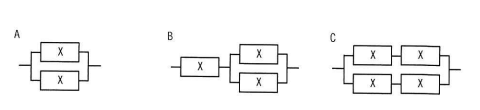

稼働率が等しい装置Xを直列や並列に組み合わせたとき，システム全体の稼働率を高い順に並べたものはどれか。ここで，装置Xの稼働率は0よりも大きく1未満である。
A：Xが2台、並列に接続された構成
B：Xが1台と、（Xが2台並列接続されたユニット）が直列に接続された構成
C：（Xが2台並列接続されたユニット）が2つ、直列に接続された構成
ア A，B，C イ A，C，B ウ C，A，B エ C，B，A

イ：A，C，B
| 選択肢 | 内容 | 補足 |
|---|---|---|
| ア | A，B，C | Bが3構成の中で最も低い稼働率になるため、Bを2番目に置くこの順序は誤り |
| イ | A，C，B | 正解。装置Xの稼働率をxとすると、A＝1－(1－x)²＝x(2－x)、B＝x×{1－(1－x)²}＝x²(2－x)、C＝{1－(1－x)²}²＝x²(2－x)²となる。0＜x＜1の範囲で常にA＞C＞Bが成立する |
| ウ | C，A，B | Aが3構成の中で最も高い稼働率になるため、Aを2番目に置くこの順序は誤り |
| エ | C，B，A | A・Cの大小関係およびBの位置が実際の計算結果と逆になっており誤り |
出典：2024年度 秋期 応用情報技術者試験 午前 問14（IPA）